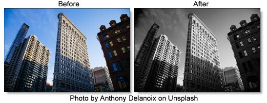

Black and White
Description
Black and White converts color images to black and white simulating the look of Black and White photographic filters.
Category
Color.
Controls
Presets
To select a preset, pick one from the Presets window.
Filter
The Filter pop-up selects the type of black and white filter to be applied to your color image. Go to the
Black and White section of Common Filter Controls to see how the Black and White controls work.
Brightness
Adjusts the brightness of the image. Positive values brighten, negative values darken.
Contrast
Adjusts the contrast of the image. Positive values increase contrast, negative values decrease contrast.
Gamma
Adjusts the gamma of the image. The gamma adjustment leaves the white and black points the same and only modifies the values in-between. Positive values lighten the midtones, negative values darken the midtones.